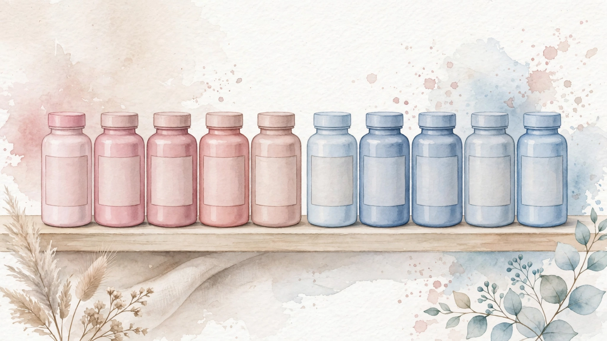

トップ ＞ インナーケア・サプリ ＞ 男女別・年代別に分かれた商品の表示の見方
男女別・年代別に分かれた商品の表示の見方

サプリメントの中には、「女性用」「男性用」「50代からの」といった具合に、対象が分かれて販売されているものがあります。同じシリーズで対象違いが並んでいると、表示の読み方にもコツがあります。この記事では、対象が分かれた商品の表示の見方を整理します。
対象表示は、パッケージの入口にある
対象の表示は、商品名の近くやパッケージ表面に大きく書かれていることが多いです。対象が分かれているということは、成分の組み立てや栄養成分の並びが、対象ごとに変えられているということです。シリーズで比べる場合は、裏面の栄養成分表示を並べて見ると、違いの場所が見えてきます。
比べる際は、単位をそろえることが基本です。1日分あたりの表示か、1粒あたりかを確認し、同じ物差しで並べてください。対象表示は入口の案内、裏面の表示は中身の確認、という読み分けが大切です。
目安量も、対象で違うことがある
見落とされがちなのが、一日摂取目安量です。同じシリーズでも、対象によって目安量や1回の粒数が違うことがあります。家族で同じシリーズを使い分ける場合は、「自分の対象の目安量」をそれぞれ確認してください。見た目が似ているため、相手の分と取り違える事故も起こりやすくなります。
保管の工夫としては、対象ごとに置く場所やケースの色を分ける方法があります。名前の目印を付けることも有効です。対象が分かれた商品は、共用を前提にしていないものとして扱うのが基本です。
対象外の人が考える場合は
「対象は女性用だが、男性が使ってはいけないのか」といった疑問を持つこともあると思います。その判断は、表示だけでは完結しません。対象表示は商品の設計の前提を示すものですから、対象外の使用を考える場合は、販売者の窓口で確認するのが確実です。
年代別の商品も同じです。年齢は目安の区切りとして表示されているもので、切り替えの時期に迷う場合は、窓口への確認と、自分の生活や食事の状況とあわせて考えることが大切です。対象表示は、選ぶときの絞り込みの案内として使い、細部は裏面の表示で確かめる。この読み方が、シリーズものの迷いを減らします。
切り替えの時期にも、表示を読み直す
年代別のシリーズでは、「40代からの」から「50代からの」へ、といった切り替えの時期に迷うことがあります。区切りは目安として表示されているものなので、切り替えの前には、両方の商品の裏面表示を並べて、目安量と成分の並びの違いを確認してください。そのうえで迷う場合は、窓口への確認が確実です。
家族で対象違いを使い分ける家庭では、パッケージの色や形が似ているほど取り違えが起こります。置き場所を分ける、ケースの色を変える、名前を書くといった工夫は、対象別の商品では特に大切です。対象表示は、選ぶときの案内であると同時に、家の中での管理の目印でもあります。
共用を前提にした商品と、対象を分けた商品は、設計の考え方が違います。「家族みんなで」という表示のあるものは共用の前提、対象の書かれたものは個人の前提。この違いを読み分けることが、シリーズものの表示の見方の土台です。
対象別の商品を選ぶときは、店頭や通販の棚でも対象表示が絞り込みの入口になります。ただし、同じ対象でもメーカーが違えば設計は異なります。対象表示で絞り、裏面の表示で確かめる。この二段構えが、シリーズもの・対象もの共通の読み方です。
贈り物にする場合も、相手の年代や性別に合った対象表示は目安になりますが、最終的には相手が表示を読んで判断できる形で渡すことが大切です。対象は入口、判断は裏面で、と覚えてください。
セラフィナ「対象が分かれている商品は、目安量まで人ごとに違うことがあるんだね」

セラフィナ｜美容の道具箱の案内役
「量と表示が分かれば、美容は失敗しない。」——セラフィナと白猫のモコが、買う前のチェックポイントを案内します。綺麗になりたい気持ちに正直に、でも表示は冷静に読むのが、このサイトの約束です。